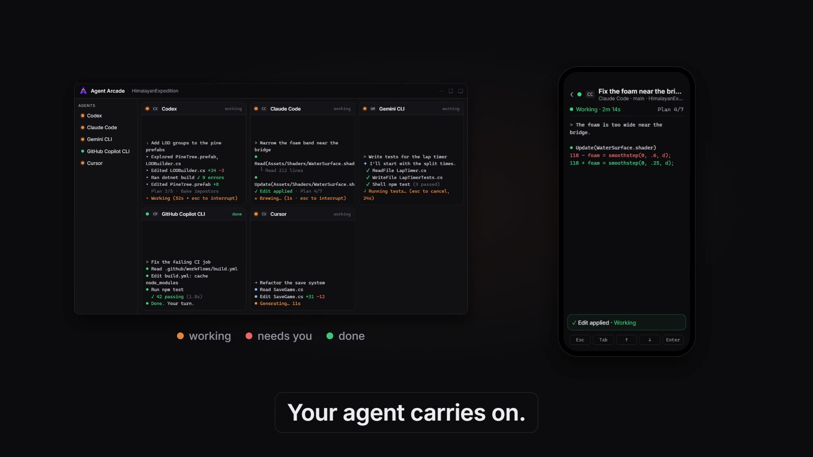

Run every AI coding agent side by side on Windows
Claude Code, Codex, Gemini CLI, GitHub Copilot CLI and Cursor, each in its own live terminal pane, with a status dot that shows which one is working, which is done and which needs you. Watch and approve them from your Android phone, directly over Wi-Fi or Tailscale, with no Agent Arcade server in between.
Each agent signs in through its own official login. Your subscriptions stay yours.
On your phone, amber means "needs your OK".
Why it exists
One window for every agent you pay for
Every agent, one window
Five built-in agents plus any command-line agent, each in a real Windows terminal. The grid arranges itself, and dragging panes never restarts an agent.
Never miss a "needs you"
A status dot on every pane and every sidebar entry. Windows notifies you only when you aren't looking, and one click takes you to the pane.
Your desk in your pocket
The Android remote shows each agent's live terminal and lets you approve, answer, start and stop, straight from your phone to your PC.
Five agents working at once, not one after another
Agent Arcade runs each vendor's official CLI in a real Windows terminal (ConPTY, the same mechanism Windows Terminal uses), drawn with GPU rendering when it's available and 5,000 lines of scrollback per pane.
- The grid arranges itself. One agent fills the window, two or four get two columns, any other number gets three.
- Drag a pane onto another to swap them. Your agents keep running; nothing restarts.
- Missing a CLI? Click Install, check the vendor's install command, and it runs in a pane you can watch.
- No credits, no markup. Agent Arcade isn't another AI. It hosts the official tools.
See who needs you at a glance
Agent Arcade reads each agent's status from the terminal itself (approval prompts, "esc to interrupt" lines) and from the notifications the agents send, so no plugins are needed. Treat it as a strong signal, not a guarantee.
- A pane you aren't looking at turns red? You get a Windows notification and a taskbar flash. Click it to jump straight there.
- Keeps your PC awake. While agents run, Windows doesn't go to sleep by itself; the screen can still turn off.
- Switch projects without stopping anything. Each folder gets its own grid, and its dots stay visible in the sidebar.
Do you want to make this edit to WaterSurface.shader? › 1. Yes 2. Yes, and don't ask again this session 3. No, and tell Claude what to do differently
HimalayanExpedition · Do you want to make this edit to WaterSurface.shader?
WINDOWS NOTIFICATION · CLICK TO JUMP TO THE PANE
Your desk in your pocket
Pair your Android phone with one QR scan. Agents that need you are listed first. Open one to read its terminal live, in full colour.
- Numbered and yes/no prompts become buttons. Tap "1 Yes" and the pane on your PC carries on. Menus get on-screen Esc, Tab, arrow and Enter keys.
- Type a reply, start, stop or resume agents, and browse your history by project.
- Nothing you do on the phone moves your PC's view. It talks straight to your PC over Wi-Fi or Tailscale.
Your other tools are already in the window
A side panel holds what you'd otherwise open in other windows.
- Preview: localhost links an agent prints open in a sandboxed panel.
- Images: your project's images; drag one onto a pane to paste its path.
- Changes: a live git status and diff that refreshes every 5 seconds without taking git's lock.
- Console: PowerShell in your project folder.
Handoff prompts let one agent write HANDOFF.md and the next pick it up. Agent Arcade fills the prompt in for you to review and never sends it by itself.
M Assets/Shaders/WaterSurface.shader M Assets/Scripts/LODBuilder.cs A Tests/LapTimerTests.cs @@ -116,7 +116,7 @@ float4 frag(v2f i) float d = depth01(i.uv); - float foam = smoothstep(0, .6, d); + float foam = smoothstep(0, .25, d); foam *= _FoamStrength;
SIDE PANEL · CHANGES · REFRESHES EVERY 5 S
Talk, don't type Pro · Windows
Pro includes Agent Arcade Voice, a dictation app for Windows built for prompting coding agents. Hold Ctrl Shift Space to talk, and the cleaned-up text is pasted where your cursor is.
- Whisper runs on your own PC. Audio stays in memory and is never uploaded.
- Cleanup that understands code. Fillers and stutters go; npm, .env and C# stay as you write them.
- Prompt Coach scores your prompts and shows the habits that cost you corrections.
What you said
Um, so, uh, the the conf- configuration in cloud code is um broken after the update
What the agent gets
The configuration in Claude Code is broken after the update.
YOUR OWN "WRONG => RIGHT" FIXES, APPLIED LOCALLY
Private by design
Your phone talks to your PC. Nothing else.
No Agent Arcade cloud, no telemetry, no account with us, and no handling of your AI logins.
| Agent Arcade itself | No telemetry, no analytics, no account with us. Vendor installers download only when you click Install. |
|---|---|
| Your AI logins | Stay with the AI tools. Agent Arcade never asks for, reads or stores passwords or login tokens. |
| Chat history | On your PC only: titles, agent, account, folder and times. Never the conversation itself. |
| Phone remote | Phone to PC only, over your network or Tailscale. Off until you turn it on. |
| Your agents | Talk to their own vendors under your accounts, exactly as they would in any terminal. |
30 seconds
See it in one go

▶CAPTIONED · NO SOUND NEEDED
Pricing
Free for personal use. Pro for work.
One rule: if you're paid for the work, choose Pro.
Personal
EUR 0 no time limit
Learning, hobby projects, unpaid open source and your own content.
- Every agent, every pane, every status dot
- Side panel, history, multiple accounts
- The Android remote
Pro For work
EUR 25 per user / month, excl. VAT
Freelancers, employees, agencies and companies.
- Everything in Personal, with a commercial licence
- Agent Arcade Voice and Prompt Coach
- VAT invoices and priority support
Your Claude, ChatGPT, Gemini, GitHub Copilot and Cursor plans are separate. We sell no AI usage and add no markup.
FAQ
Questions people ask first
Is Agent Arcade really free?
Yes, for personal use: learning, hobby projects, unpaid open source and your own content. You get every feature, including the Android remote. No account, no key, no time limit. The only thing it doesn't include is Agent Arcade Voice, which comes with Pro.
Do I need Pro?
Only if Agent Arcade is part of paid or organisational work: freelance or client work, your job (even if your employer doesn't pay for it), an agency, or a company. Licences are per person, not per PC. When a side project starts earning, you have 30 days to switch. See examples.
Are my Claude, ChatGPT, Gemini, Copilot or Cursor plans included?
No. Agent Arcade runs each vendor's official CLI, and each one signs in with your own account and plan. We don't resell AI usage or add a markup. Running several agents in parallel uses up those plans' limits faster.
Does Agent Arcade see my logins or my code?
Your AI logins stay with the AI tools: Agent Arcade never asks for, reads or stores passwords or login tokens. It has no telemetry and no cloud of its own, and its history keeps only titles, folders, times and ids, never chat contents. Your agents do send your prompts and code to their own vendors under your accounts, just as they would in any terminal.
How does the phone remote work without a cloud?
Turn on Phone remote on the PC (it's off by default), scan the QR code with the Android app, and check that the same fingerprint shows on both screens. From then on your phone connects directly to your PC over Wi-Fi, or over Tailscale when you're away, using TLS checked against your PC's own certificate.
Can several agents work in the same project safely?
They share the project folder, each in its own pane. There's no per-agent git worktree isolation yet, so give them separate tasks, or open separate folders as separate workspaces. The Changes tab shows every edit live. Agents aren't sandboxed and run with your Windows permissions.
Is there a Mac version or an iPhone app?
Not yet. Agent Arcade runs on Windows 11 (x64), and the remote is Android only. Say you want one in GitHub Discussions so we know who's waiting.
Why does Windows warn me when I start it?
The download isn't code-signed yet, so SmartScreen may say it "protected your PC". Click More info, then Run anyway. You can check the file against the SHA-256 on the download page, and the full source is on GitHub.
What are we building today
Free for personal use. Pro for work, with voice dictation.